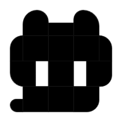
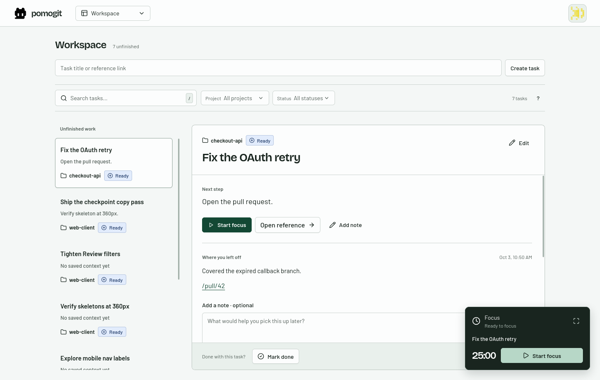
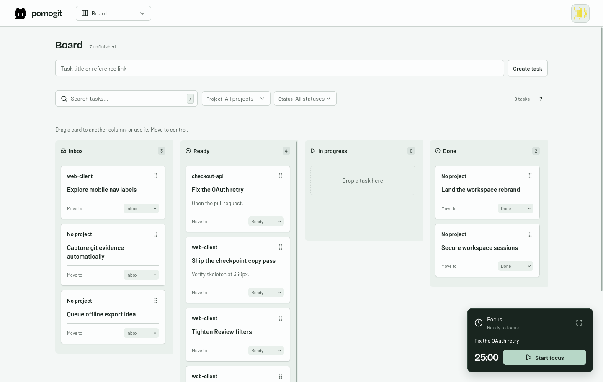

Mika ChenBuilding thoughtful developer tools.
Featured work
A calmer checkout recovery
Made an interrupted checkout easier to retry, without losing the user’s place.
checkout-api / pull / 42Illustrative profile · publishing comes later
pomogitA focused workspace for developers
A task. A next step. Time to move it forward.
Keep your context close to the issue or pull request it belongs to.
No elaborate setup. Begin with one task.

A smaller loop
Keep GitHub for the code. Use Pomogit to hold the thread while you do the work.
Write a title or paste a reference. Sort it when you’re ready.
Inbox → Ready → In progress → DoneChoose a task, then start focus. The timer follows you; stopping it doesn’t complete your work.
One task. One focus session.Finish quickly. Add a note when it helps. Make tomorrow’s first decision easier.
“Retry path works. Check the expired-code case next.”A place for every next move
Move tasks through Inbox, Ready, In progress, and Done. Keep the next step close, even before it’s time to focus.

Your work, in your words
Choose the outcomes you want people to see. Keep private task notes private. Add a little working rhythm when you want to share it.
Explore the profile proposalFeatured work
Made an interrupted checkout easier to retry, without losing the user’s place.
checkout-api / pull / 42Illustrative profile · publishing comes laterNo. Your code, issues, and pull requests stay there. Pomogit keeps your selected task, focus session, and next step together.
No. Capture and organize tasks, add notes, or mark work done without starting focus.
Private notes stay out of the visitor profile. Featured work uses a separately written public summary; activity sharing is optional.
No. GitHub account access is a proposed flow. The current app accepts reference links; automatic repository syncing is not implemented.
Make the next step a little easier
Use your GitHub identity. Repository access isn’t needed to get started.
Use example details. No account will be created, and nothing leaves this page.
Session ended
Your saved work is still yours.
Log back in when you’re ready to pick it up.
Preview only · no real session was ended
A preview of your workspace
Start with a task. Focus and notes are optional.
Next step
Reproduce the expired-code case, then check the retry response.
Typing saves a draft for this HTML review session.
This small demo exercises account entry and logout. Open the full workspace proposal